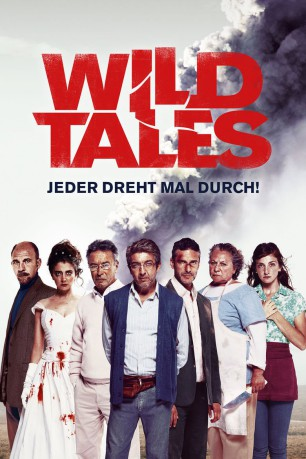
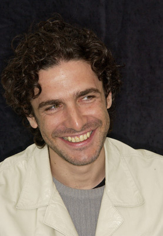
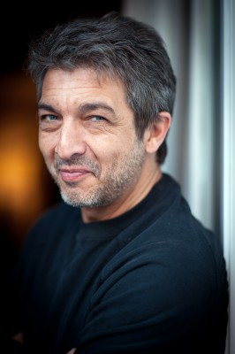

#1259 Wild Tales: Jeder dreht mal durch!
Auszeichnungen: für 1 Oscars nominiert 1 BAFTA-Awards gewonnen
 gesehen am 02.08.2015
gesehen am 02.08.2015
 
 IMDB-Wertung: 8.1 / 10
IMDB-Wertung: 8.1 / 10  IMDB-TOP-Platzierung: 183
IMDB-TOP-Platzierung: 183  Metascore: 77
Metascore: 77 
"Wild Tales" ist ein Episodenfilm, bestehend aus sechs Geschichten, die zwar inhaltlich nicht zusammenhängen, thematisch aber trotzdem verknüpft sind. In "Pasternak" entdecken die Reisenden in einem Flugzeug, dass alle denselben gescheiterten Musiker kennen. In der zweiten Episode "Die Ratten" muss sich eine Kellnerin (Julieta Zylberberg) mit einem Mann aus ihrer Vergangenheit (Cesar Bordon) auseinandersetzen, der ihre Eltern in den Ruin trieb. In "Straße zur Hölle" sorgt ein aggressiver, mitten im Nirgendwo ausgetragener Zweikampf für Blutvergießen. In "Bombita" setzt sich der gleichnamige Held (Ricardo Darin) mit unorthodoxen Mitteln gegen Abschleppwagen und Strafzettel zur Wehr. In der vorletzten Episode "Die Rechnung" geht es um die schmutzigen Einzelheiten einer Fahrerflucht. Und in "Bis dass der Tod uns scheidet" findet eine frischgebackene Braut (Érica Rivas) heraus, dass ihr Angetrauter sie betrogen hat. Ihre Entrüstung darüber bringt so manchen Hochzeitsgast ins Krankenhaus…
Jahr: 2014
Dauer: 122 Minuten
FSK: 12
Land: Argentinien Studio: Prokino FilmverleihTonspuren:
Untertitel: Deutsch,
Auflösung: 1080p (1920x808) Größe: 6983 MB
Genre: Komödie, Drama, Thriller
Regisseur: Damián Szifron
Drehbuch: Germán Servidio, Damián Szifron
Soundtrack: Gustavo Santaolalla
Darsteller:
- Darío Grandinetti als Salgado, segment Pasternak
- María Marull als Isabel, segment Pasternak
- Rita Cortese als Cocinera, segment The Rats
- Julieta Zylberberg als Moza, segment The Rats
-  Leonardo Sbaraglia als Diego, segment Road to Hell
- Walter Donado als Mario, segment Road to Hell
-  Ricardo Darín als Simón, segment Bombita
- Oscar Martínez als Mauricio, segment The Deal
- Germán de Silva als Casero, segment La propuesta
- Erica Rivas als Romina, segment Til Death Do Us Part
- Mónica Villa als Profesora Leguizamón, segment Pasternak
- César Bordón als Cuenca, segment The Rats
- Nancy Dupláa als Victoria, segment Bombita
- María Onetto als Helena, segment The Deal
- Osmar Núñez als Lawyer, segment The Deal
- Diego Gentile als Ariel, segment Till Death Do Us Part
- Alejandro Angelini als Diariero, segment Bombita , uncredited
- Cristina Blanco als Infractora, segment Bombita , uncredited
- Gustavo Bonfigli als Disc Jockey, segment Hasta que la muerte nos separe , uncredited
- María Laura Caccamo als Empleada Aerolínea, segment Pasternak , uncredited
- Pablo Chao als Controlador de Tránsito, segment Bombita , uncredited
- Juan Pablo Colombo als Joven Perito, segment El más fuerte , uncredited
- Alan Daicz als Santiago, segment La propuesta , uncredited
- Claudio Delan als Bocha, segment Hasta que la muerte nos separe , uncredited
- Miguel Di Lemme als Amigo Ariel, segment Hasta que la muerte nos separe , uncredited
- Héctor Drachtman als Padre Pasternak, segment Pasternak , uncredited
- Marcelo Frasca als Gerente Casa Tía, segment Pasternak , uncredited
- Ángel Frega als Camarógrafo, Néstor, segment Hasta que la muerte nos separe , uncredited
- Andrea Garrote als Abogada Victoria, segment Bombita , uncredited
- Lucrecia Gelardi als Mujer 1, episodio 'Bombita' , uncredited
- Martín Gervasoni als Infractor, segment Bombita , uncredited
- Paula Grinszpan als Amiga Romina, segment Hasta que la muerte nos separe , uncredited
- Silvina La Morte als Cronista 3, segment La propuesta , uncredited
- Federico Liss als Empleado Playón, segment Bombita , uncredited
- Pablo Machado als Hombre 1, segment Pasternak , uncredited
- Lucila Mangone als Azafata, segment Pasternak , uncredited
- Luis Mazzeo als Pécora, segment Bombita , uncredited
- Daniel Merwicer als Conductor, segment Bombita , uncredited
- Margarita Molfino als Lourdes, segment Hasta que la muerte nos separe , uncredited
- Horacio Nin Uria als Maître, segment Hasta que la muerte nos separe , uncredited
- Javier Pedersoli als Único Amigo, segment Pasternak , uncredited
- Fiorella Pedrazzini als Recepcionista Compañía Minera, segment Bombita , uncredited
- Marcelo Pozzi als Cocinero, segment Hasta que la muerte nos separe , uncredited
- Victoria Roland als Pastelera, segment Bombita , uncredited
- Noemí Ron als Mediadora, segment Bombita , uncredited
- Mariano Sigman als Familiar de la Víctima, segment La propuesta , uncredited
- Diego Starosta als Ignacio Fontana, segment Pasternak , uncredited
- Ricardo Truppel als Hombre Elegante, segment Bombita , uncredited
- Horacio Vay als Hombre 2, segment Pasternak , uncredited
- Ramiro Vayo als Marido de la Víctima, episodio 'La propuesta' , uncredited
Datei: X:\2014(N-Z)\Wild Tales Jeder dreht mal durch! (2014, FSK12, 1920x808).mkv seit 12.06.2015
Festplatte: HD 2013(I-Z)-2014(A-Z)
 Es gibt insgesamt 163 Filme in der Gruppe '2014(N-Z)'
Es gibt insgesamt 163 Filme in der Gruppe '2014(N-Z)'